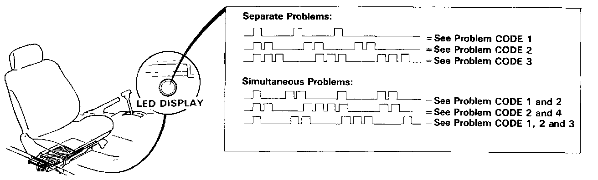

Without Scan Tool

PROCEDURE
When the Check Engine warning light has been reported on, turn the ignition on, move the front passenger seat to the rear position and observe the LED on the front of the ECU. The LED indicates a system failure code by blinking frequency. The ECU LED can indicate any number of simultaneous component problems by blinking separate codes, one after another.
If codes other than those listed above are indicated, count the number of blinks again. If the indicator is in fact blinking these codes, substitute a known-good ECU and recheck. If the indication goes away, replace the original ECU.
The Check Engine warning light and ECU LED may come on, indicating an system problem, when, in fact, there is a poor or intermittent electrical connection. First, check the electrical connections, clean or repair connections if necessary.
If the Check Engine warning light is on and LED stays on, replace the ECU.